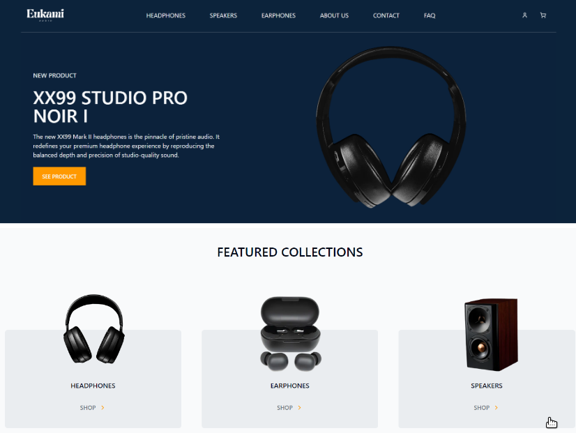
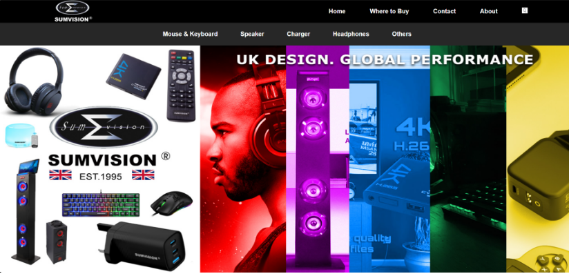
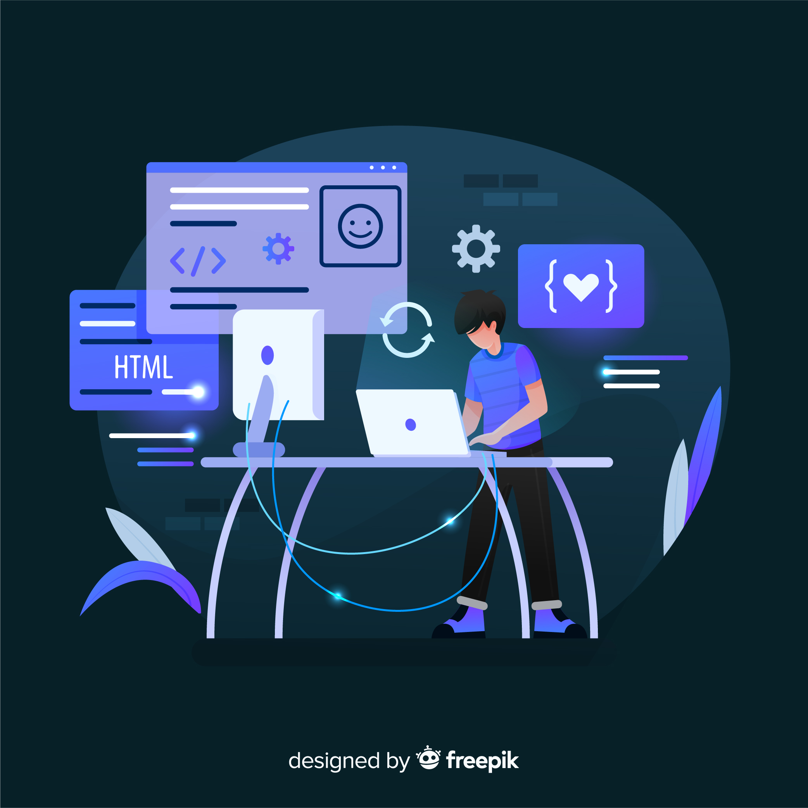
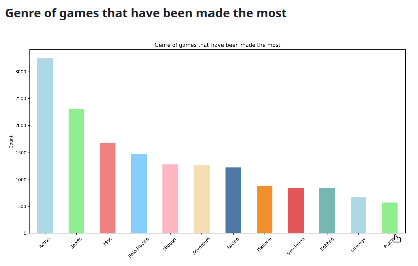
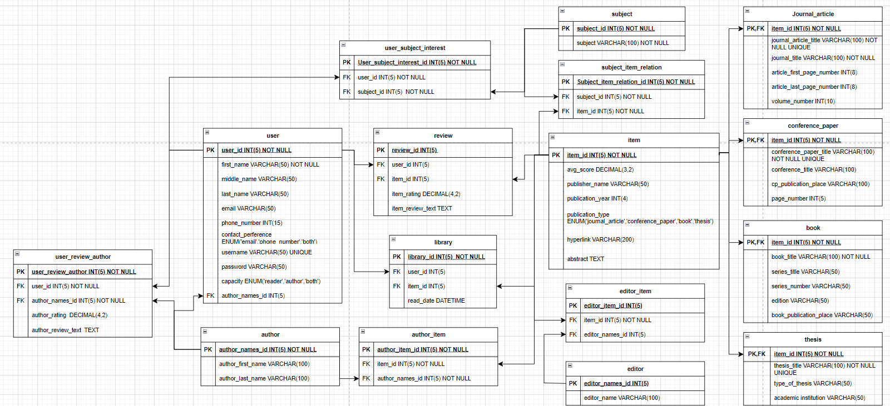

I am a recent Computer Science MSc graduate from Aston University with a solid foundation in programming, algorithms, and software development. Throughout my academic journey, I gained hands-on experience in building applications, designing systems, and working with modern technologies such as HTML, CSS, JavaScript, Python, and databases. I enjoy turning ideas into real, functional solutions and love tackling challenges that require creativity and logical thinking. My interests include web development, software engineering, and exploring emerging fields like AI and machine learning. I am committed to continuous learning and excited to contribute to meaningful projects that create value for users.

A website focused on selling audio products including, headphones, earphones, speakers, and other electronic products.

An e-commerce website will focus on selling electronic based products such as headphones, keyboards, mouses, speakers, chargers and others.

A NoSQL Database with a user-friendly interface for easy retrieval of unstructured data.

Video Games Sales Analysis and Visualisation. Aims to extract meaningful insights from the video game sales data by extracting, examining, cleaning and transforming the data.

A SQL database that is designed to hold various science archives within the database. This includes books, conference papers, thesis, and journal articles.
a multiple-choice game that enables the player to answer various questions to escape.
Calculator that assist users to calculate numbers.
A drawing toy on the web that leaves a dark line on the screen when hovering.
A rock paper scissors game that allows the user to play against the computer.
A basic sign-up form.
RandomWalks uses create a visual representation of data. generating a 'random walk' path with random directions.
Analysis data to efficiently predict new, previously unknown epitopes in the proteins of a virus.
Email: kennysum82@gmail.com
UK phone number: +44 7528 521 813
China phone number: +86 186 2137 3659